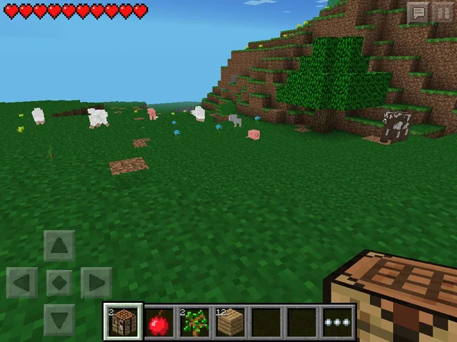

Minecraft Pocket Edition (2012)
My first Minecraft experience. My pre-pubecent hands would grip the bezels of my i-pad 2 for hours on end as I bacame watery-eyed from concentration. Despite, my great time investment, I didn't make any substantian progress. I recall the process of growing wheat was novel to me as I had thought only villagers had the capacity to do so. Oh, whenever I'd chance upon a village, I thought it was the coolest shit ever, and I'd effectivly take over one of their homes as my own and try to live amoungst them.
